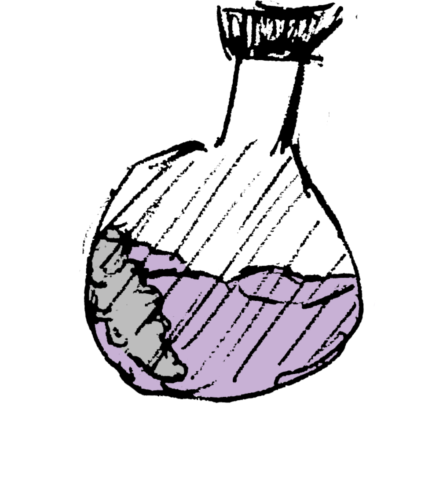
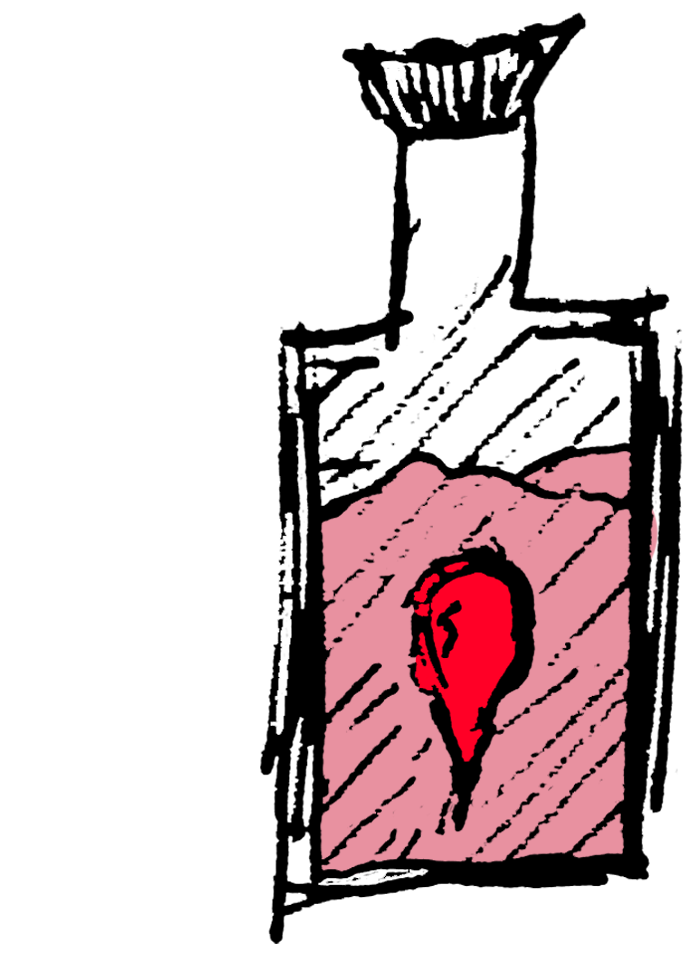

Haz Clic en los circulos de colores para dañar al enemigo. 2 clics hacen bastante daño, Mas de 3 clics a un mismo circulo significa una ruleta rusa a favor de ti o a favor de tu contrincante. Ten en cuenta lo siguiente:
Haz Clic en los circulos de colores para dañar al enemigo. 2 clics hacen bastante daño, Mas de 3 clics a un mismo circulo significa una ruleta rusa a favor de ti o a favor de tu contrincante. Ten en cuenta lo siguiente:

ELIXIR DE SANGIJUELA: Los colores Violeta y sus derivados restablecen la Salud del enemigo en cierto porcentaje. No les ataques con su propia medicina.

ELIXIR SELLADOR: esta posima sella tu alma para que no salga volando... Restablece tu vida un 3% o mas dependiendo del nivel.
CRITICO: este ataque es muy poco comun, los habitantes del campo de setas tienen mucha destreza, casi imposible acertar un golpe de esta indole.
DIFICULTAD FACIL: solo aparece un circulo a la vez, el enemigo no se cura por si mismo. Ideal para bebes exploradores.
DIFICULTAD NORMAL: un maximo de 20 circulos a la vez, los circulos desaparecen rapidamente, se añade la posibilidad de ataques criticos.
DIFICULTAD DIFICIL: Los circulos se escapan de ti, persiguelos y busca ganarle a LA CREACIÓN. Es necesario asestar el ultimo golpe critico para vencerlo.